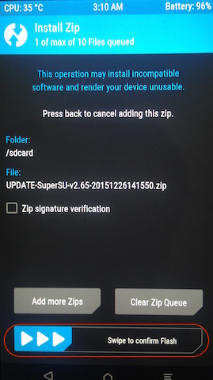

对于Android开发，是不需要Root Android就可以进行，只需要开启"Developr options"就可以了。Root Android的目的是为了增加可玩性，例如在Android上部署Linux
Root Android和苹果设备的Jailbreak不是一个概念
通过Wug's Nexus Root Toolkit实现root android
Rooting your Android文档提供了各种Android设备的Root方法的索引，其中How to root your Nexus 5介绍如何root Nexus 5设备。
如果是Windows操作系统，Wug's Nexus Root Toolkit，可以非常方便实现快速的Root。不过，对于Mac/Linux用户，可以参考Is there a version of your toolkit for Mac/Linux yet?，其实就是通过虚拟机来运行Windows系统，再运行这个Root Toolkit。
通过ADB方式手工root android
上述的root android依赖特定工具，实际上隐藏了技术细节。如果是Mac/Linux系统，可以通过手工方法，使用ADB来传输root镜像实现root Android目的。
通过root android，可以在系统级别调优，甚至可以完全替换操作系统。此外，通过root Android，将获得在Linux内核上运行桌面OS的权限，也就是可以修改系统或者安装unapproved组件。当获得root访问权限之后，可以对设备进行完整的备份和恢复，意味着可以将系统完整复制到新的手机或者平板中。同时也具有了安装自定义ROM，如CyanogenMod或者Paranoid Android（一种定制ROM用于扩展和增强Android）。
如何Root Android
root过程要根据不同的设备来调整，但是，第一个步骤都是相同的，即unlock，也就是绕过bootloader。bootloader是设备启动时第一个运行的程序，它会验证所有运行在手机上的软件。所以要安装root软件包，需要首先屏蔽bootloader。
注意：请先备份数据，unblock bootloaders将擦除设备上的内容！
- 下载和安装Android SDK并安装USB驱动包和Android tools
请参考 升级Nexus 5系统 中相关步骤完成上述安装过程
使用Android Debug Bridge (ADB)
- 将设备通过USB连接到主机
adb devices
需要看到设备清单
List of devices attached
02211e9ec9623837 device
- 使用
adb tool在设备启动的状态下执行如下命令
adb reboot bootloader
- 通过以下命令将设备的
bootloader解锁
fastboot oem unlock
这时设备会提示确认屏幕(unlock以后，可以安装定制的操作系统) 注意，确认后设备上的所有用户数据被清除 ，此时系统会回到出厂状态（相当于新的手机）。
使用音量键将高亮确认键移动到Yes上，然后按下电源键确认执行unlock
此时设备屏幕上显示LOCK STATE - unlocked一行小红字，表示解锁成功，现在就是解锁状态的FASTBOOT MODE了。可以开始刷入新系统了。
上述步骤我在升级Nexus 5系统时候已经全部做过了，所以当前操作都跳过这些。如果你是第一次操作，则需要完成上述步骤。
- 在电脑上下载 TWRP recovery 或者 ClockWorkMod（需要根据不同设备进行下载）以及SuperSU软件包（可以从xda developers论坛SuperSU板块找到最新版本）。
TWRP Manager (Requires ROOT)也可以从Google Play Store安装，使用Google Play Store上的TWRP Manager比较傻瓜化，并且可以根据TWRP官方网站版本更新而不断根新版本，推荐使用。
ROM Manager也可以从Google Play Store安装 （版本似乎旧一些）
SuperSU 也可以从Google Play Store安装
从Google Play Store安装的免费版本有内购（主要是用于去除广告），但功能不受影响，所以可以直接安装使用。
SuperSU是在rooted之后才能安装使用，实际进行root的是TWRP或ClockWorkMod。
从 [BETA][2016.02.28] SuperSU v2.68 看，推荐使用TWRP。TWRP是一个开源的社区项目，并且持续活跃开发。通过TWRP，可以安装完全定制的ROM，如OmniROM，这是一个非常有意思的开源项目。
我的实际操作如下：
- 下载 http://download.chainfire.eu/supersu-stable ，然后通过ADB将文件传输到手机设备中
- 从 TWRP device list 下载对应于设备的文件，例如，我使用的LG Nexus 5 (hammerhead)，请参考其中文档下载twrp-3.0.0-0-hammerhead.img，然后使用如下方法刷入手机
adb reboot bootloader
fastboot flash recovery twrp-3.0.0-0-hammerhead.img
- 断开手机和主机连接，然后使用音量键滚动选择
Recovery mode（从Start=>Restart bootloader=>Recovery mode），然后按下电源键确认进入Recovery模式。此时手机会再次启动，启动后就会看到TWRP界面
TWRP会提示允许是否允许修改分区

此时滑动最下方的Swipe to Allow Modifications，进入安装TWRP更改页面，并点击Install按钮

滚动页面，选择前面传输到手机设备中的supersu.zip文件（具体文件名根据下载版本会不同），然后点击Install Image按钮

在确认页面滑动Swipe to confirm Flash按钮，确认进行刷新

刷新成功后，就可以点击Reboot System重启系统

注意：一定要在
fastboot flash recovery twrp.img后马上启动到Recovery模式，立即安装SuperSU.zip。因为很多设备第一次启动时会自动替换掉定制的recovery(TWRP)，就会导致前面的步骤白做了。一旦TWRP启动，TWRP就会对ROM进行补丁来避免ROM替换掉TWRP。如果你忘记了这个步骤，需要重复前面所述的安装步骤，再重头来一次。今后再安装升级，可以下载最新的TWRP image存放到手机，然后再次进入Recovery模式，使用原先安装的TWRP进行
Install就可以升级到最新版本的TWRP。
- 验证Root是否成功
在Google Play Store中安装Root Checker应用程序，执行这个程序来检查。该程序不会对系统做任何修改，只是验证获取Root权限是否能够成功，所以是一个安全的程序。
看到以下验证界面就表示Root设备成功了

root后Android升级
root过之后的Android运行和使用没有任何问题，但是会遇到一个问题，就是当Google推送系统升级的时候，每次系统启动开始打补丁总是不成功，进入Android系统之后，依然看到系统提示你要更新软件包。
在TWRP启动时候，注意观察，可以看到启动报错是在安装/cache/update.zip包时候返回了一个Status 7错误：
Updating partition detail...
...done
Full SELinux support is present.
Running Recovery Commands
Installing zip file '/cache/update.zip'
Checking for MD5 file...
Skipping D5 check: no MD5 file found
Package expects build fingerprint of google/hammerhead/hammerhead:6.0.1/MMB29Q/2480792:usr/release-keys for google/hammerhead/hammerhead:6.0.1/MMB29V/2554798:usr/release-keys; this device has google/omni_hammerhead/hammerhead:5.0.2/LRX22G/3:eng/test-keys.
Updter process ended with ERROR: 7
Error installing zip file '/cache/update.zip'
Done processing script file
MTP Enabled
截图如下：
上述Status 7错误的原因是因为更新软件包中的updater-script脚本中有一部分是检查设备型号是否和安装的ROM兼容，这部分的updater-script有一个称为asserts的部分是用来校验的。
- 将
update.zip文件复制出来（对于系统目录下文件复制，需要su权限，见下文）解压缩
adb shell
su
当使用了su指令之后，就可以进入root帐号，此时就可以cd /cache等系统目录。不过，无法使用adb root指令（这个指令可以以root身份运行adbd，就可以直接adb pull系统文件），如果直接使用adb root指令会提示正式产品设备无法使用该指令
adbd cannot run as root in production builds
解决的方法参考 copy db file with adb pull results in 'permission denied' error，可以将系统文件复制到普通目录，如/sdcard/Download目录，然后就可以下载或上传。
cd /sdcard/Download
cp /cache/update.zip ./
然后在主机操作系统执行adb命令复制出文件
adb pull /sdcard/Download/update.zip
- 解压缩以后，进入
META-INF/com/google/android目录，将updater-script复制成updater-script.txt，然后使用文本编辑器编辑这个文件 - 删除
assert开头的所有行（也就是对文件进行校验的命令），然后保存文件 - 再将
updater-script.txt重命名会updater-script - 重新将文件压缩成原先的
update.zip，并传输回
zip -r update.zip META-INF patch
adb push update.zip /cache/update.zip
上述方法对于OTA方式升级新的Android系统或者补丁包都是适用的
不过，我依然遇到ERROR 7报错，仔细检查报错，发现是因为fingerprint错误
getprop("ro.build.fingerprint") == "google/hammerhead/hammerhead:6.0.1/MMB29Q/2480792:user/release-keys" ||
getprop("ro.build.fingerprint") == "google/hammerhead/hammerhead:6.0.1/MMB29V/2554798:user/release-keys" ||
abort("Package expects build fingerprint of google/hammerhead/hammerhead:6.0.1/MMB29Q/2480792:user/release-keys or google/hammerhead/hammerhead:6.0.1/MMB29V/2554798:user/release-keys; this device has " + getprop("ro.build.fingerprint") + ".");
添加上 google/omni_hammerhead/hammerhead:5.0.2/LRX22G/3:eng/test-keys（因为root的时候使用了omni_hammerhead的）或者索性删除掉这行getprop检查即可以绕过报错。
修改上述代码行：
getprop("ro.build.fingerprint") == "google/hammerhead/hammerhead:6.0.1/MMB29Q/2480792:user/release-keys" ||
getprop("ro.build.fingerprint") == "google/hammerhead/hammerhead:6.0.1/MMB29V/2554798:user/release-keys" ||
getprop("ro.build.fingerprint") == "google/omni_hammerhead/hammerhead:5.0.2/LRX22G/3:eng/test-keys" ||
abort("Package expects build fingerprint of google/hammerhead/hammerhead:6.0.1/MMB29Q/2480792:user/release-keys or google/hammerhead/hammerhead:6.0.1/MMB29V/2554798:user/release-keys; this device has " + getprop("ro.build.fingerprint") + ".");
Nexus 5启动进入
recovery模式的方法是在启动时同时按下上下两个音量键再按下电源键启动，保持这3个键按下状态，直到系统启动，就会进入Fastboot/Bootloader Mode options页面，此时就可以通过音量键选择recovery模式（How to Boot Recovery Mode for Google Nexus 5）
其他验证步骤需要修正
- 去除
/system/recovery-from-boot.p校验
Verifying current system...
"/system/recovery-from-boot.p" has unexpected contents.
Updter process ended with ERROR: 7
Error installing zip file '/cache/update.zip'
Updating partition details...
...done
这个报错解决方法是删除updater-script中以下检查行
apply_patch_check("/system/recovery-from-boot.p", "49d5122adb02c2f67f1f80d3 9a384ec6d44bf3e1", "8130c984873d707063496965b6ad571518bcd968") || abort("\" /system/recovery-from-boot.p\" has unexpected contents.");
- 去除
EMMC校验
Verify current system..
"EMMC:/dev/block/platform/msm_sdcc.1/by-name/boot:9371648:dac193c5c724e60434495657d50583e53d1a9137:9367552:81250cee12dbb1332479d2f91b179fb96e09377a" has unexpected contents.
Updter process ended with ERROR: 7
Error installing zip file '/cache/update.zip'
Updating partition details...
...done
这个报错解决方法是删除updater-script中以下检查行
apply_patch_check("EMMC:/dev/block/platform/msm_sdcc.1/by-name/boot:9371648 :dac193c5c724e60434495657d50583e53d1a9137:9367552:81250cee12dbb1332479d2f91 b179fb96e09377a") || abort("\"EMMC:/dev/block/platform/msm_sdcc.1/by-name/b oot:9371648:dac193c5c724e60434495657d50583e53d1a9137:9367552:81250cee12dbb1 332479d2f91b179fb96e09377a\" has unexpected contents.");
root后Android升级patch完整操作步骤整理
上述对
root后Android升级做了探索，反复折腾了多次，总算完成了root后第一次补丁包安装。本段落再做一次整理总结
root过的Android系统会对Android做如下改动
- 启动分区修改（也就是
/system/recovery-from-boot.p） - EMMC修改
ro.build.fingerprint修改- 部分系统软件包的替换（目前我不确定是哪些被修改了，要看实际SHA校验）
操作步骤
在Nexus 5 Android操作系统中检查系统更新，此时系统提示下载补丁包完成后，不要直接进行升级。而是连接USB数据线，使用
adb进行操作。连接USB数据线后，执行如下
adb命令(其中su命令是为了获得Android系统的root权限，以便从系统目录中复制出补丁包)
adb devices
adb shell
su
cp /cache/update.zip /sdcard/Download/
此时补丁包被复制到存储卡目录下，就可以通过adb命令复制出来进行修改了。
- 使用
adb工具将Nexus 5中已经下载的update.zip复制出来
adb使用方法参考ADB Shell
adb pull /sdcard/Download/update.zip
- 解压缩
update.zip
此时补丁包update.zip被复制到当前目录，使用zip命令进行解压缩
zip -d update.zip
解压缩以后，当前目录下会有两个子目录META-INF和patch
修改META-INF/com/android/updater-script脚本
- 删除所有
assert开头的所有行（也就是对文件进行校验的命令) - 删除
EMMC校验
apply_patch_check("EMMC:/dev/block/platform/msm_sdcc.1/by-name/boot:9371648 :dac193c5c724e60434495657d50583e53d1a9137:9367552:81250cee12dbb1332479d2f91 b179fb96e09377a") || abort("\"EMMC:/dev/block/platform/msm_sdcc.1/by-name/b oot:9371648:dac193c5c724e60434495657d50583e53d1a9137:9367552:81250cee12dbb1 332479d2f91b179fb96e09377a\" has unexpected contents.");
- 删除
/system/recovery-from-boot.p校验
apply_patch_check("/system/recovery-from-boot.p", "49d5122adb02c2f67f1f80d3 9a384ec6d44bf3e1", "8130c984873d707063496965b6ad571518bcd968") || abort("\" /system/recovery-from-boot.p\" has unexpected contents.");
- 修改或删除
fingerprint校验（这里可以根据第一次补丁包安装时提示错误来修改，或者索性删除）
getprop("ro.build.fingerprint") == "google/hammerhead/hammerhead:6.0.1/MMB29Q/2480792:user/release-keys" ||
getprop("ro.build.fingerprint") == "google/hammerhead/hammerhead:6.0.1/MMB29V/2554798:user/release-keys" ||
abort("Package expects build fingerprint of google/hammerhead/hammerhead:6.0.1/MMB29Q/2480792:user/release-keys or google/hammerhead/hammerhead:6.0.1/MMB29V/2554798:user/release-keys; this device has " + getprop("ro.build.fingerprint") + ".");
- 重新打包
zip -r update.zip META-INF patch
- 通过
adb将修改过的update.zip传回手机
adb push update.zip /sdcard/Download/
- 启动Android进入
recovery模式（同时安装上下音量键和电源键开机，并选择recovery模式） - 通过
TWRP的Install功能安装自己修改过的/sdcard/Download/update.zip
安装过程如果有报错，请仔细查看报错信息，一般是校验错误，只要相应修改updater-script脚本绕过就可以了
使用TWRP的Install功能安装补丁包有一个好处，就是安装失败可以立即修改update.zip，再用adb将调整后的update.zip传入手机再次尝试升级。多试几次，就会成功！
升级TWRP 3.0.2.0
通过Google Play Store安装了TWRP Manager (Requires ROOT)，将TWRP升级到3.0.2.0之后，安装Android 6.0.1的补丁包update.zip遇到的报错类似前述，报错信息略有改变
Package expects build fingerprint of google/hammerhead/hammerhead:6.0.1/MMB29V/2554798:usr/release-keys for google/hammerhead/hammerhead:6.0.1/MOB30D/2704746:usr/release-keys; this device has google/omni_hammerhead/hammerhead:5.1.1/LYZ28J/5:eng/test-keys.
这个问题比较麻烦，每次需要手工hack升级脚本不是解决的好方法
参考
- Rooting your Android - 介绍通过Wug's Nexus Root Toolkit快速完成
- How to Root Android - 介绍了手工操作完成root Android方法，适用所有Android设备，推荐阅读
- How to Fix Status 7 Error While Installing OTA Update or Custom ROMs